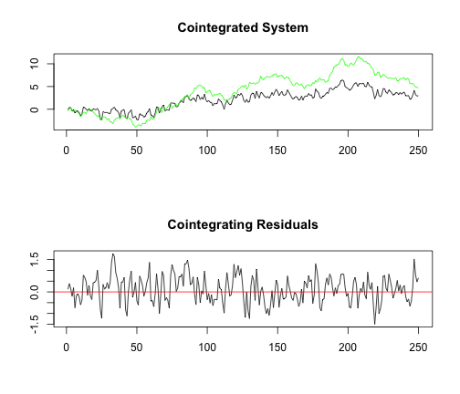
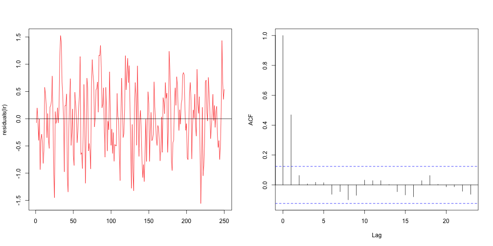
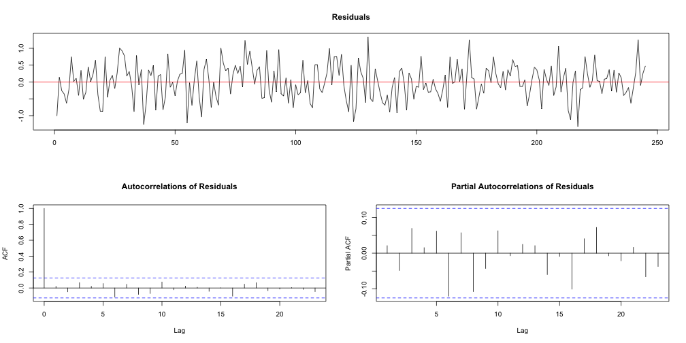

Gerando séries claramente cointegradas
set.seed(12345)
e1 <- rnorm(250, mean = 0, sd = 0.5)
e2 <- rnorm(250, mean = 0, sd = 0.5)
u.ar3 <- arima.sim(model = list(ar = c(0.6, -0.2, 0.1)), n = 250, innov = e1)
y2 <- cumsum(e2)
y1 <- u.ar3 + 0.5 * y2

Estimar regressão entre variáveis y1 e y2.
lr <- lm(y1 ~ y2)
summary(lr)
##
## Call:
## lm(formula = y1 ~ y2)
##
## Residuals:
## Min 1Q Median 3Q Max
## -1.5557 -0.4407 0.0053 0.4403 1.5273
##
## Coefficients:
## Estimate Std. Error t value Pr(>|t|)
## (Intercept) 0.19143 0.05276 3.63 0.00035 ***
## y2 0.48218 0.00939 51.36 < 2e-16 ***
## ---
## Signif. codes: 0 '***' 0.001 '**' 0.01 '*' 0.05 '.' 0.1 ' ' 1
##
## Residual standard error: 0.608 on 248 degrees of freedom
## Multiple R-squared: 0.914, Adjusted R-squared: 0.914
## F-statistic: 2.64e+03 on 1 and 248 DF, p-value: <2e-16

Testar a existência de raiz unitária nos resíduos.
library(urca)
ur <- ur.df(y = residuals(lr), lags = 4, type = "none", selectlags = "BIC")
ur@teststat
## tau1
## statistic -9.809
Valores críticos
## 1pct 5pct 10pct
## tau1 -3.943 -3.362 -3.063
